2. wojewodzki_2013_podlaskie_gim_q13_fig1 b22f3b2d match@4px 0.54


27 figures, worst first. 2 below 0.75. Drag on a panel to box a problem, click a box to edit or delete it.
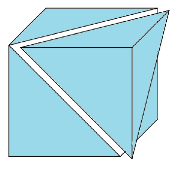
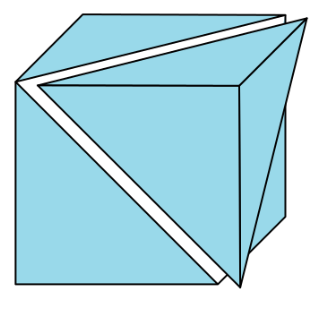
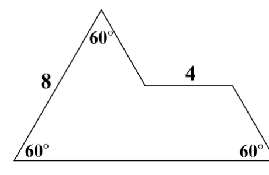
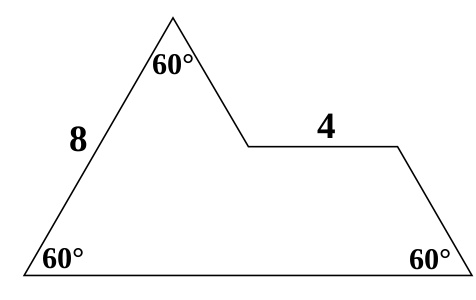
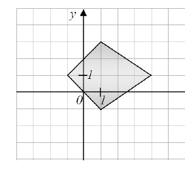
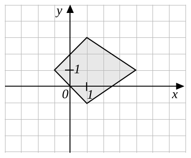
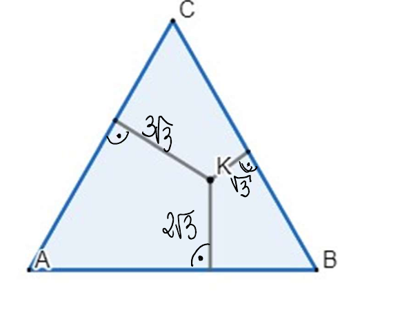
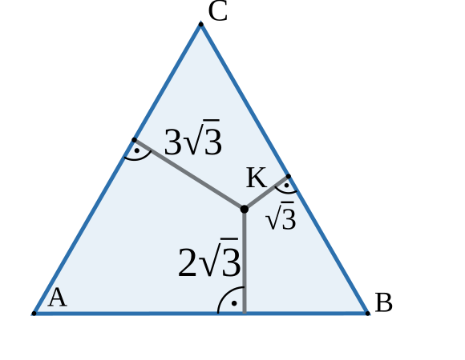
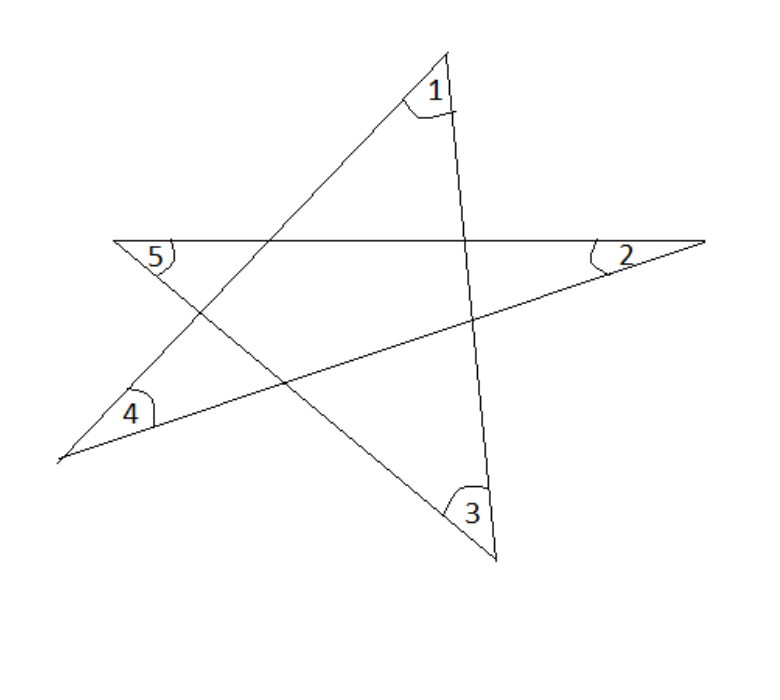
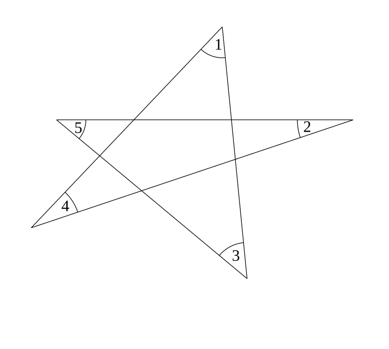
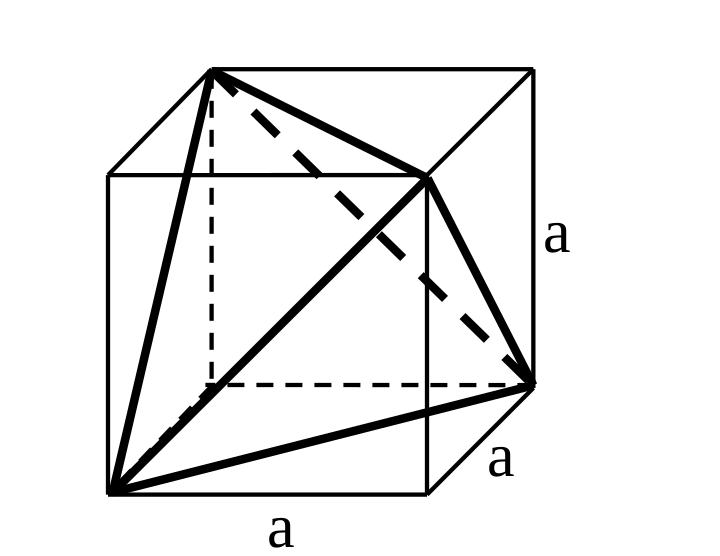
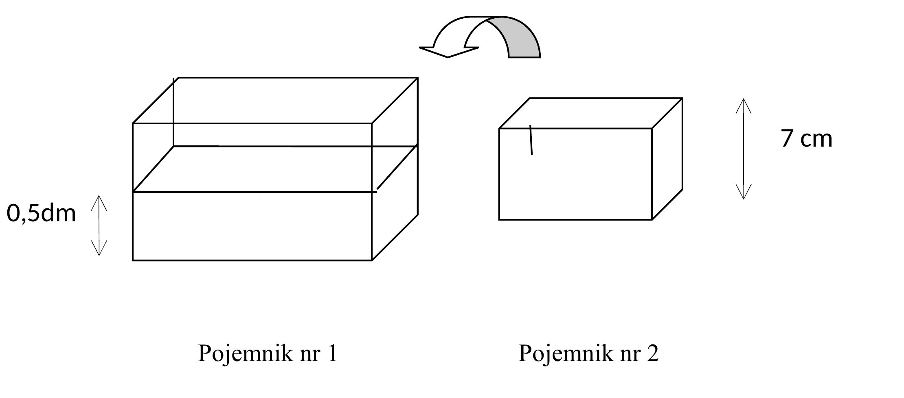
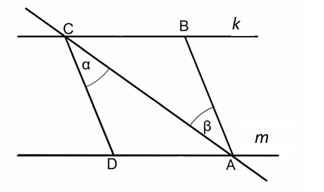
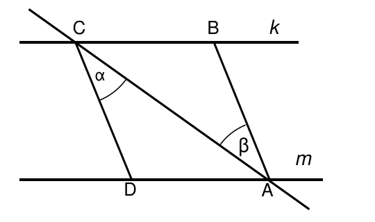
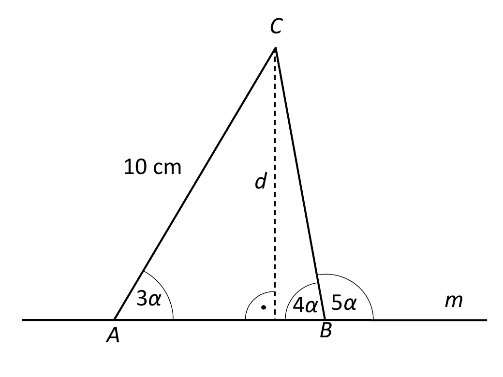
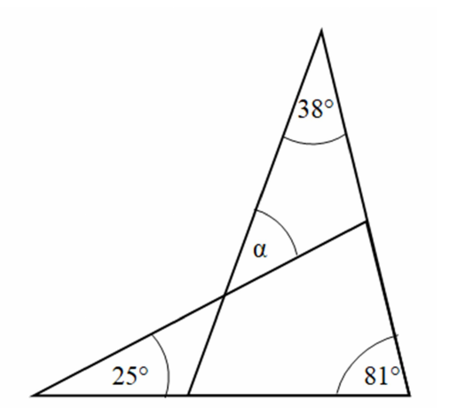
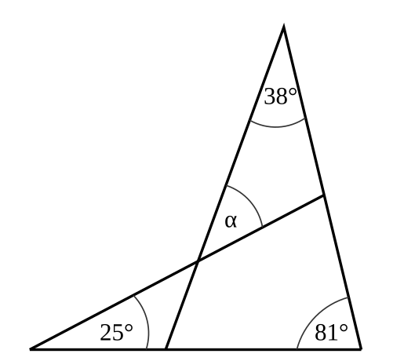
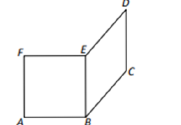
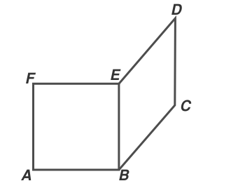
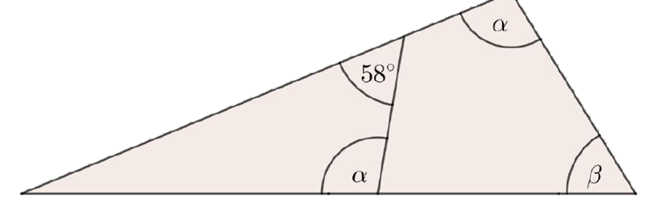
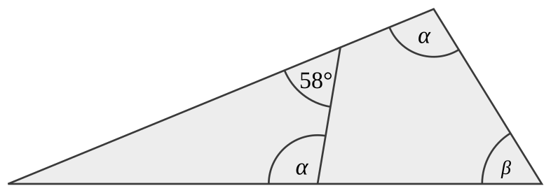
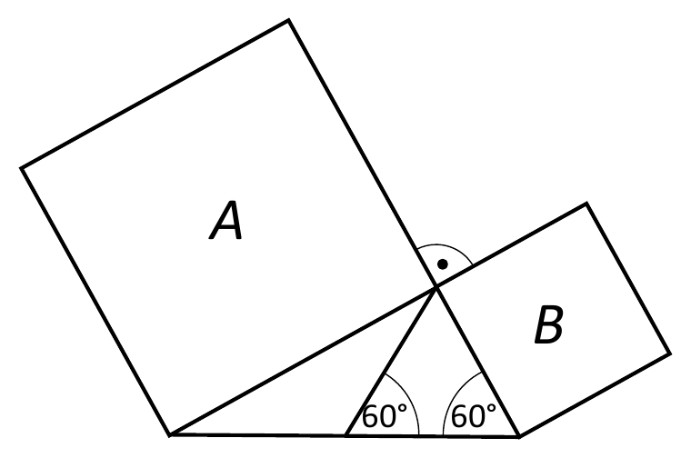
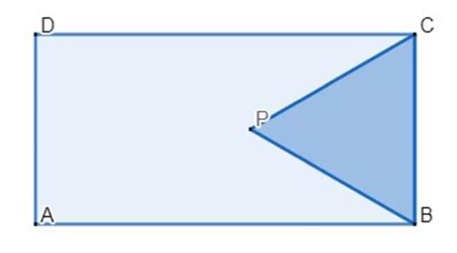
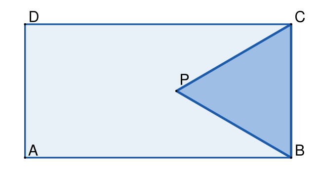
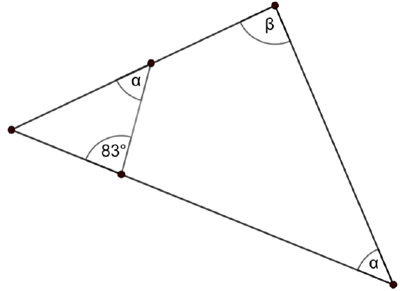
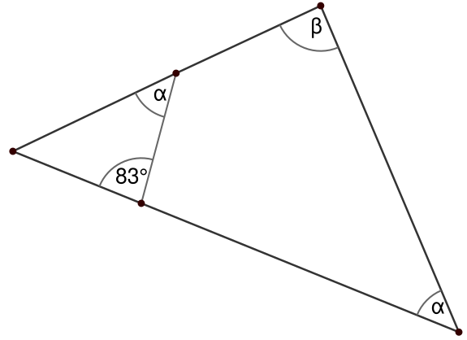
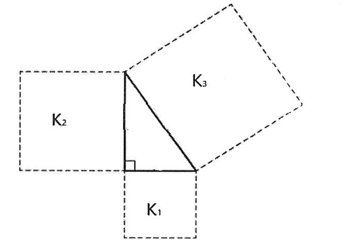
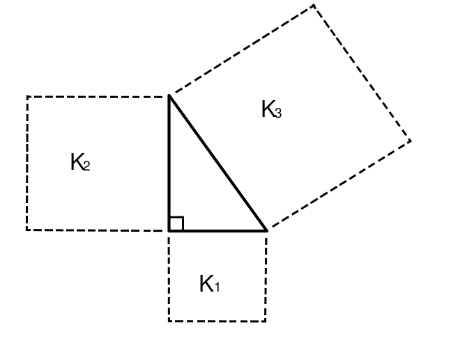
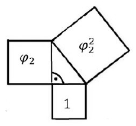
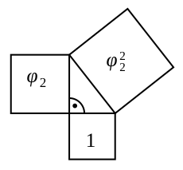
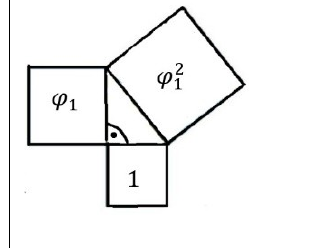
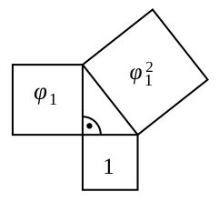
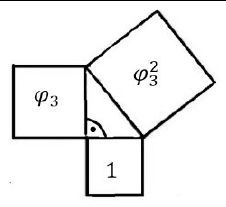
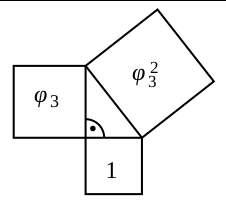
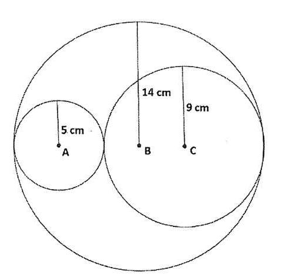
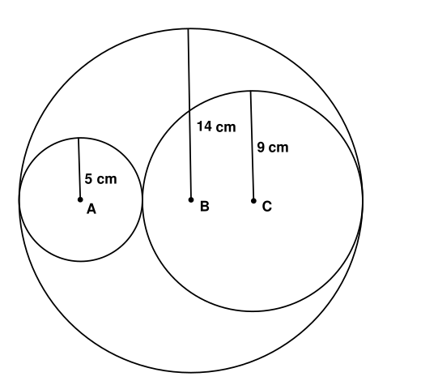
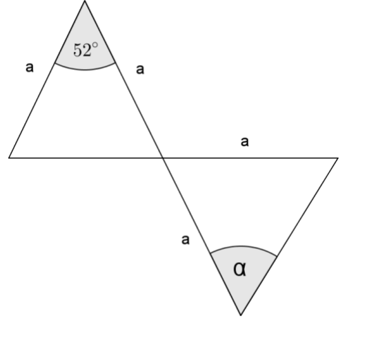
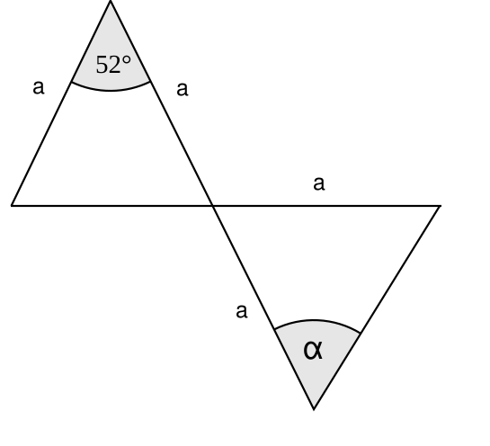
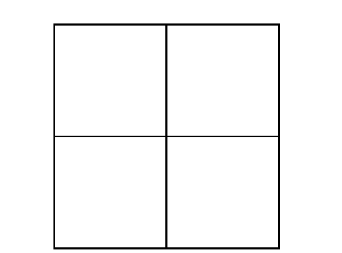
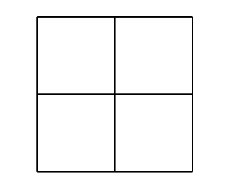
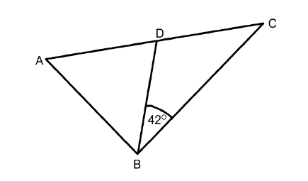
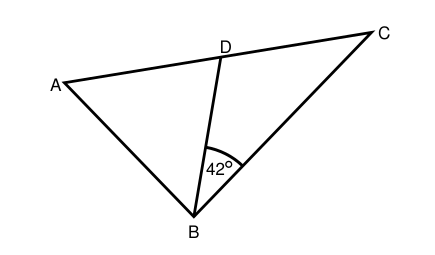
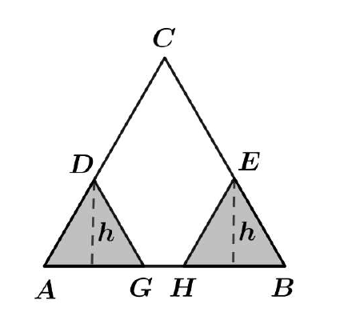
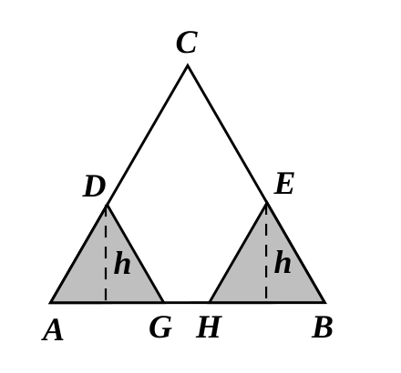
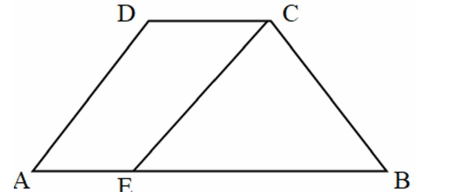
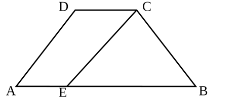
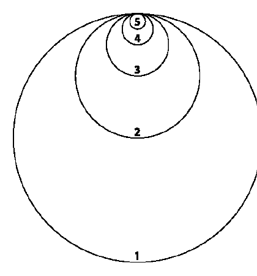
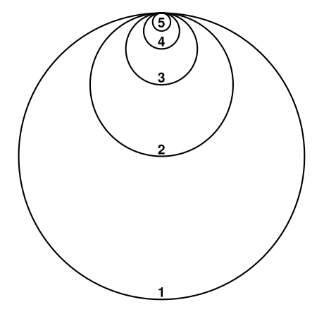